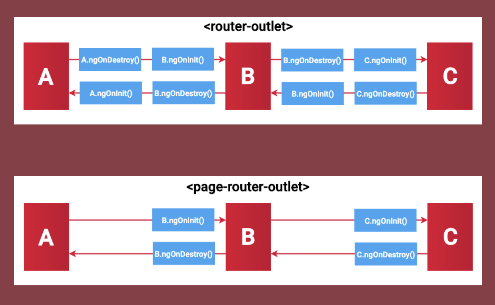
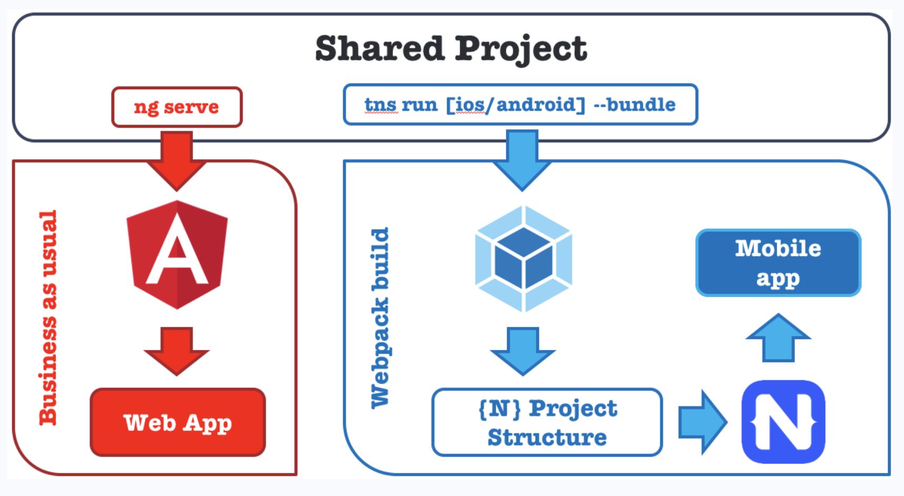

60-120 with NativeScript + Angular
Thank you sponsors!!!

About Me
NativeScript developer @FocustApps
Open Source Contributor
- NS Market Samples
- GitHub Issues
- NS Community Slack

Agenda
-
Review
- Angular vs NS Differences
- Angular vs NS Similarities
- Code Sharing
-
Demo
- Event Binding (tap)
- Navigation with Parameters
- 1 Way Binding
- 2 Way Binding
Differences
Component Lifecycle

Routing
NativeScript has its own RouterModule which extends the Angular RouterModule
Which provides the following:
Http Client
UI
Workflow / Adding New Pages
- Create a folder inside of /src/app directory
- Add a code behind file (add-car.component.ts)
- Add a template file (add-car.component.html)
- Add a styling file (add-car.component.css|scss)
- Import the component into your (app.module.ts)
- Add a routing path in your (app-routing.module.ts)
Similarities
Code Behind
Binding
| Type | Syntax |
|---|---|
| 1 Way | [text]="productNumber" |
| 1 Way (cont) | [color]="isPaid ? 'green' : 'red'" |
| Interpolation | text="Total price is {{totalPrice}}." |
| 2 Way | [(ngModel)]="userName" |
| Event | (tap)="someMethod(params,...)" |
Styling
- CSS
- SASS
Code Sharing
How can I have multiple template files for 1 code behind file?
Build Process

Demo Time!
What We'll Make

Link to follow along: https://bit.ly/32CzP83